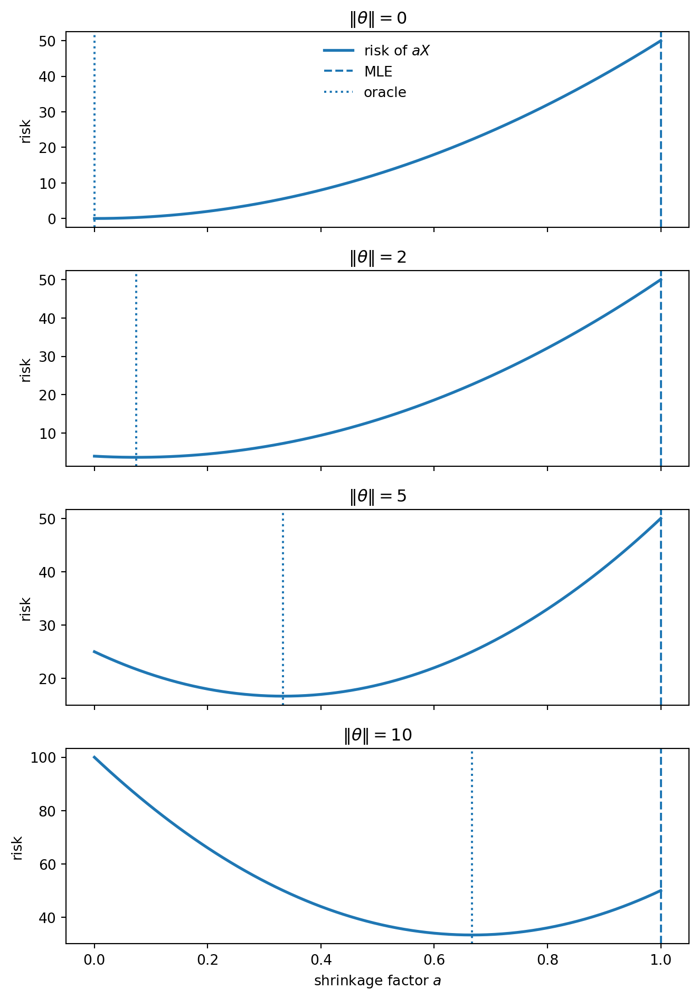
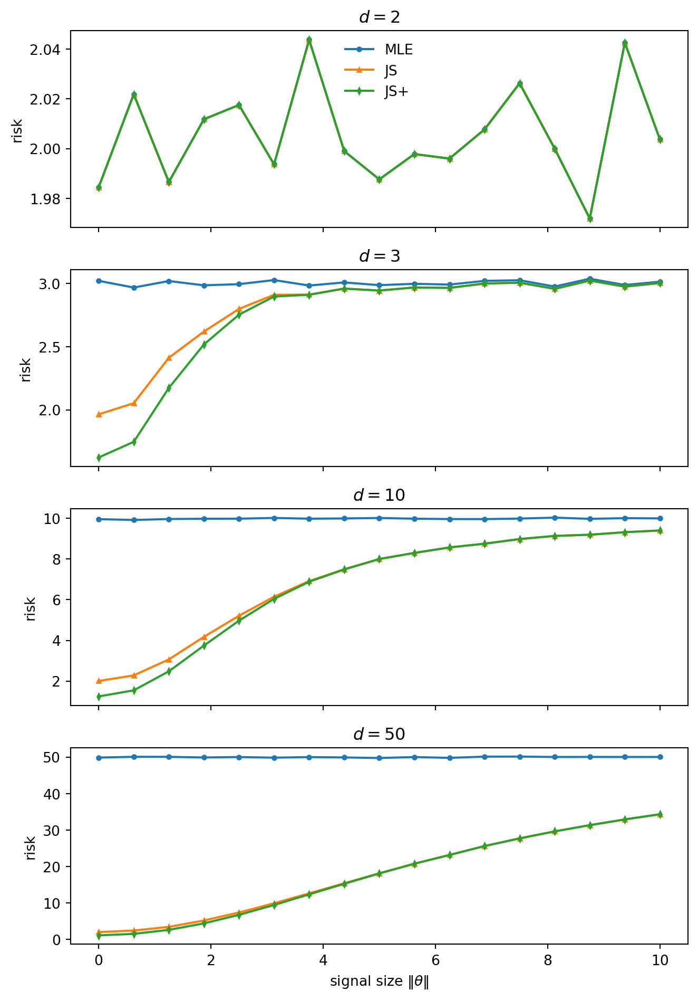
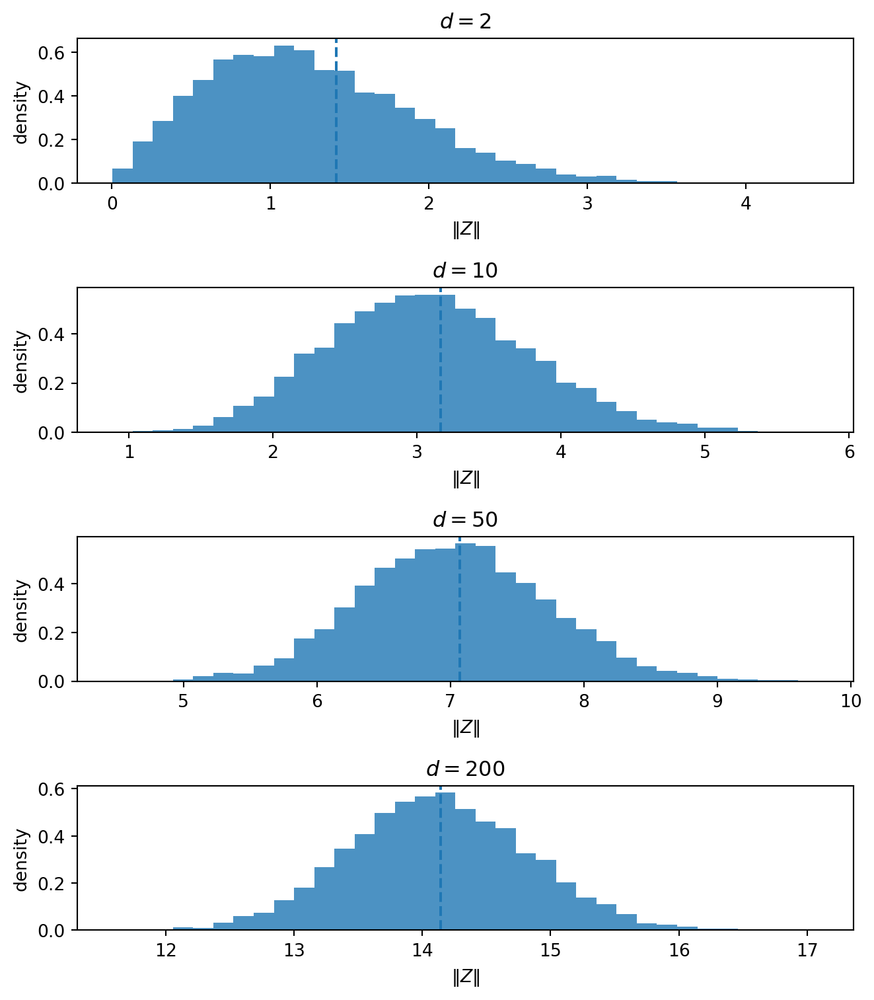
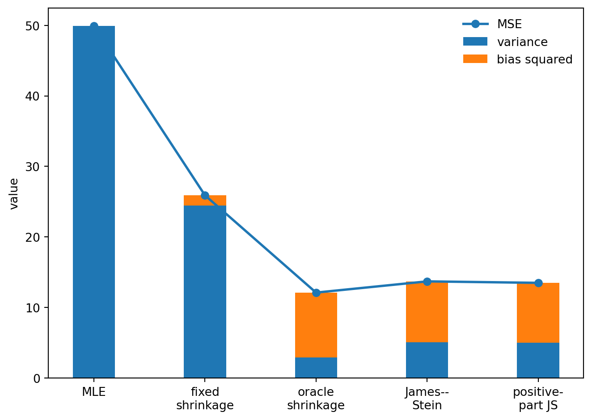
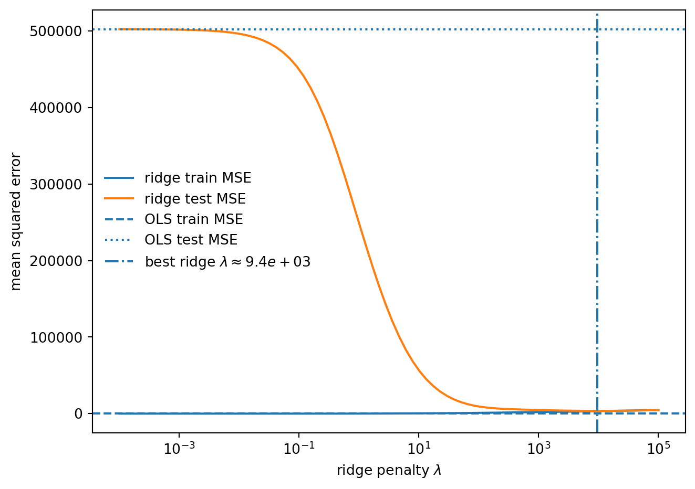
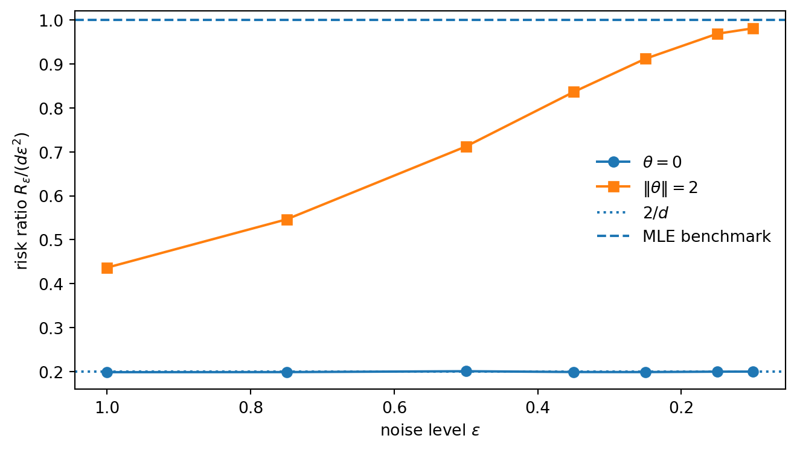

2026-04-28
This note continues the same theme as the note on Firth’s adjustment: bias is not always a disease.
Used carelessly, bias distorts.
Used deliberately, with an understanding of the geometry, it can be a remedy.
The setting is the Gaussian normal-means problem
X \sim N_d(\theta,I_d), \qquad \theta\in\mathbb R^d.
The usual estimator is
\hat\theta_{\mathrm{MLE}}(X)=X.
It is unbiased, and its squared-error risk is
R(\theta,\hat\theta_{\mathrm{MLE}}) = \mathbb E_\theta \|\hat\theta_{\mathrm{MLE}}(X)-\theta\|^2 = \mathbb E_\theta\|X-\theta\|^2 = d.
At first sight, this looks hard to improve. The estimator is honest coordinate by coordinate. It adds nothing, removes nothing, and has constant risk.
But in dimension at least three, this honesty is not optimal.
James and Stein showed that one can shrink X toward the origin and obtain smaller total squared-error risk for every value of \theta. The estimator becomes biased, but the reduction in variance more than pays for the bias.
The slogan is:
In high dimension, noise has length. The estimator X treats all of that length as signal. Shrinkage deliberately gives up unbiasedness to remove part of the noise length.
There is also a philosophical point running through the note. Classical statistics often treats unbiasedness as a kind of cleanliness condition. The James–Stein phenomenon shows that this is too narrow. Under squared-error loss, risk is the relevant object, and risk contains both bias and variance.
The lesson is not that bias is good in itself. The lesson is that a small, structured bias can be better than a large variance.
The note has five parts. Part I gives the fixed-shrinkage warm-up. Part II states the James–Stein phenomenon. Part III explains the geometry. Part IV gives a small machine-learning analogue. Part V discusses super-efficiency at the shrinkage target.
Before James–Stein, consider the simpler rule
\delta_a(X)=aX, \qquad 0\le a\le 1.
The case a=1 is the usual estimator. Smaller values of a pull the estimate toward the origin.
Suppose more generally that
X=\theta+\varepsilon, \qquad \mathbb E[\varepsilon]=0, \qquad \operatorname{Cov}(\varepsilon)=\sigma^2 I_d.
Then
\delta_a(X)-\theta = a(\theta+\varepsilon)-\theta = (a-1)\theta+a\varepsilon.
Taking squared norms and expectations gives
R(\theta,\delta_a) = a^2d\sigma^2+(1-a)^2\|\theta\|^2.
This formula is the whole bias–variance bargain.
So shrinkage is not magic. It wins only when the variance reduction is larger than the squared bias it creates.
The oracle choice is
a^\star = \frac{\|\theta\|^2}{\|\theta\|^2+d\sigma^2}.
This cannot be used directly, because it depends on the unknown \theta. But it reveals the mechanism. When the signal is small relative to the dimension, the observation contains a large amount of noise length. In that regime, the unbiased estimator is too literal.

The figure makes the tradeoff visible.
This is not yet James–Stein. It is only the warm-up. The oracle depends on \theta, so it is not an estimator.
But it tells us what to look for: a data-dependent rule that shrinks more when the observed vector looks mostly like noise, and less when it looks like signal.
The oracle shrinkage factor uses \|\theta\|, which is unknown. James and Stein found a data-dependent rule that does not require it.
For the model
X\sim N_d(\theta,I_d),
define
\hat\theta_{\mathrm{JS}}(X) = \left(1-\frac{d-2}{\|X\|^2}\right)X.
More generally, if
X\sim N_d(\theta,\sigma^2I_d),
the corresponding form is
\hat\theta_{\mathrm{JS}}(X) = \left(1-\frac{(d-2)\sigma^2}{\|X\|^2}\right)X.
The positive-part version is
\hat\theta_{\mathrm{JS}}^+(X) = \max\left\{ 0, 1-\frac{(d-2)\sigma^2}{\|X\|^2} \right\}X.
The central fact is:
Note
For d\ge3, the James–Stein estimator has strictly smaller total squared-error risk than X for every \theta. The positive-part James–Stein estimator improves further on ordinary James–Stein.
The loss matters. The domination is for the total vector loss
L(\theta,\delta)=\|\delta-\theta\|^2,
not for every coordinate separately and not for every possible loss function.
The estimator adapts to the observed length of X. When \|X\|^2 is small, it shrinks strongly. When \|X\|^2 is large, it shrinks mildly.
The surprising part is not that shrinkage helps near the origin. That was already visible from the fixed-shrinkage calculation. The surprising part is that the rule can be tuned so that the gain near the origin is not paid for by excess risk elsewhere.

The case d=2 is included as a warning. There the James–Stein factor is identically one, because d-2=0. So the displayed James–Stein estimator reduces to the usual estimator.
The phenomenon starts at dimension three. For d\ge3, the shrinkage rule improves on X under total squared-error risk. The improvement is largest near the shrinkage target, but it does not reverse into a loss far away.
That is the inadmissibility statement: the natural unbiased estimator X is dominated.
The geometry is the same high-dimensional effect as in the thin-shell note.
When \theta=0,
X=Z\sim N_d(0,I_d).
The observation is pure noise.
But in high dimension, pure Gaussian noise is not close to the origin. Its norm is typically near \sqrt d. Indeed,
\|Z\|^2\sim \chi_d^2, \qquad \mathbb E\|Z\|^2=d, \qquad \operatorname{Var}(\|Z\|^2)=2d.
So even when the true mean is zero, the observation X usually has substantial length.
That is the geometric reason shrinkage can help. The length of X is not pure evidence of signal. Part of it is the ordinary length of high-dimensional noise.
The usual estimator X keeps the whole vector. James–Stein subtracts a data-dependent amount of radial length.

This also explains why the shrinkage target matters.
James–Stein shrinks toward zero. It is most helpful when \theta is near zero. It becomes less important when \theta is far from zero.
The theorem says that, in dimension at least three, the rule can make this local advantage without creating a global risk penalty.
For a vector estimator, define
\operatorname{Bias}(\delta;\theta) = \mathbb E_\theta[\delta(X)]-\theta
and
\operatorname{Var}_{\mathrm{tot}}(\delta;\theta) = \mathbb E_\theta \left[ \|\delta(X)-\mathbb E_\theta\delta(X)\|^2 \right].
Then
R(\theta,\delta) = \|\operatorname{Bias}(\delta;\theta)\|^2 + \operatorname{Var}_{\mathrm{tot}}(\delta;\theta).
This identity is the simplest accounting device in the note. Shrinkage deliberately adds bias. It wins when the variance reduction is larger than the added squared bias.

The usual estimator has no bias term, but it pays a large variance cost.
The shrinkage estimators pay some bias and reduce variance.
The total can be smaller.
That is the practical face of the James–Stein result. The estimator is not better because bias is attractive. It is better because the variance reduction is larger.
The James–Stein theorem is about estimating a high-dimensional mean vector. A familiar machine-learning analogue appears in regression after feature expansion.
Start with a modest regression dataset. Expand the features polynomially. The original problem may be low-dimensional, but the expanded problem can have more directions than the training data can reliably support.
Ordinary least squares tries to use all of those directions. Some directions contain signal. Many mostly contain noise.
Ridge regression changes the problem:
\hat\beta_{\mathrm{ridge}} = \arg\min_\beta \left\{ \|y-X\beta\|^2+\lambda\|\beta\|^2 \right\}.
Equivalently,
\hat\beta_{\mathrm{ridge}} = (X^\top X+\lambda I)^{-1}X^\top y.
The penalty introduces bias. But it also shrinks unstable directions, making the inverse problem better behaved.
The loss is not identical to the James–Stein loss. Here the figure measures prediction error, while James–Stein is about parameter-estimation risk.
But the mechanism is the same:
Do not trust every noisy direction equally. Shrink the unstable ones.

Polynomial degree: 4
Training observations: 287
Original features: 10
Expanded features: 1000
OLS train MSE: 0.00
OLS test MSE: 502407.96
Best ridge lambda: 9434
Best ridge test MSE: 3625.75The unregularized estimator is trying to use the entire expanded feature space. In this example, the polynomial expansion creates more directions than the training set can reliably support.
Ridge changes the problem. It no longer asks for an unpenalized least-squares fit. It asks for a stable fit with smaller coefficient norm. The result is biased, but the prediction error can be much smaller. This is the machine-learning version of the same principle. Shrinkage is not a hack added after statistics fails. It is a way of making estimation well-posed when variance is the real enemy.
There is also an asymptotic reading of the same phenomenon.
Write the small-noise model as
Y_\varepsilon=\theta+\varepsilon Z, \qquad Z\sim N_d(0,I_d).
The naive estimator Y_\varepsilon has risk
R_\varepsilon(\theta,Y_\varepsilon) = d\varepsilon^2.
The James–Stein estimator at noise level \varepsilon is
\hat\theta_{\mathrm{JS},\varepsilon} = \left( 1-\frac{(d-2)\varepsilon^2}{\|Y_\varepsilon\|^2} \right)Y_\varepsilon.
At the shrinkage target \theta=0,
Y_\varepsilon=\varepsilon Z.
For d\ge3,
\mathbb E\left[\frac1{\|Z\|^2}\right] = \frac1{d-2}.
So the risk at the origin is
R_\varepsilon(0,\hat\theta_{\mathrm{JS},\varepsilon}) = 2\varepsilon^2.
The ratio to the naive benchmark is therefore
\frac{ R_\varepsilon(0,\hat\theta_{\mathrm{JS},\varepsilon}) }{ d\varepsilon^2 } = \frac2d.
For d>2, this is strictly below one.
Away from the origin, the first-order advantage disappears. If \theta\ne0, the risk ratio tends to one as \varepsilon\to0.

This is super-efficiency in a concrete form.
At the shrinkage target, the estimator beats the usual first-order benchmark. Away from the target, the first-order advantage disappears. This is consistent with the general message. Super-efficiency cannot happen everywhere in a regular problem. The exceptional set must be small. Here the exceptional point is the shrinkage target.
Unbiasedness is a clean property. It is not the same as optimality. In the normal-means problem, the estimator X is unbiased and has constant risk d. In dimensions d\ge3, James–Stein shrinkage improves on it uniformly under total squared-error loss.
The geometric reason is that high-dimensional noise has length. The usual estimator treats the whole observed length as signal. Shrinkage refuses to do that.
So the lesson is not that bias is good by itself. The lesson is that bias can be a tool.
In all three cases, the estimator becomes less literal and more reliable.
One way to see where the James–Stein formula comes from is Stein’s unbiased risk estimate.
Write an estimator as
\delta(X)=X+g(X).
Under the usual smoothness and integrability conditions, Stein’s identity gives
R(\theta,\delta) = d+ \mathbb E_\theta \left[ \|g(X)\|^2+2\operatorname{div}g(X) \right].
Now take
g(x)=-\frac{a}{\|x\|^2}x.
Then
\|g(x)\|^2 = \frac{a^2}{\|x\|^2}.
Also,
\operatorname{div} \left( \frac{x}{\|x\|^2} \right) = \frac{d-2}{\|x\|^2},
so
\operatorname{div}g(x) = -\frac{a(d-2)}{\|x\|^2}.
Therefore
R(\theta,\delta) = d+ \mathbb E_\theta \left[ \frac{a^2-2a(d-2)}{\|X\|^2} \right].
The quadratic
a^2-2a(d-2)
is minimized at
a=d-2.
This gives the James–Stein estimator
\hat\theta_{\mathrm{JS}}(X) = \left(1-\frac{d-2}{\|X\|^2}\right)X.
Its risk is
R(\theta,\hat\theta_{\mathrm{JS}}) = d-(d-2)^2 \mathbb E_\theta \left[ \frac1{\|X\|^2} \right].
For d\ge3, this expectation is finite, and the risk is strictly below d.
That is the algebra behind the phenomenon.
The ordinary James–Stein factor can be negative when
\|X\|^2 < d-2.
Then the estimator does not merely shrink toward zero. It crosses the origin and points in the opposite direction.
That reversal is hard to justify geometrically. If the observed vector has very small norm, the natural shrinkage estimate is zero, not a vector pointing backward.
The positive-part estimator enforces this idea:
\hat\theta_{\mathrm{JS}}^+(X) = \max \left\{ 0, 1-\frac{d-2}{\|X\|^2} \right\}X.
It dominates ordinary James–Stein.
The intuition is simple: shrink inward, but do not overshoot. On the region where ordinary James–Stein reverses direction, replacing it by zero removes an unnecessary reversal.
So the positive-part rule is a second shrinkage correction.
A hierarchical model gives another route to the same intuition.
Suppose
\theta_j\sim N(0,\tau^2), \qquad X_j\mid\theta_j\sim N(\theta_j,\sigma^2), \qquad j=1,\ldots,d.
Then the posterior mean is
\mathbb E[\theta_j\mid X_j] = \frac{\tau^2}{\tau^2+\sigma^2}X_j.
Thus the Bayes estimator is a shrinkage rule:
\delta_{\mathrm{Bayes}}(X)=a_BX, \qquad a_B=\frac{\tau^2}{\tau^2+\sigma^2}.
With known \tau^2, all coordinates share the same prior scale, so each coordinate is pulled toward the common center.
In empirical Bayes versions, the scale \tau^2 is estimated from the ensemble of coordinates. That is where the borrowing-strength interpretation becomes explicit.
This is the same broad idea that appears in random effects, ridge regression, empirical Bayes, and many modern regularization methods.
William James and Charles Stein. “Estimation with quadratic loss.” Proceedings of the Fourth Berkeley Symposium on Mathematical Statistics and Probability, 1961.
Charles Stein. “Estimation of the mean of a multivariate normal distribution.” The Annals of Statistics 9(6), 1981.
Bradley Efron and Carl Morris. “Stein’s estimation rule and its competitors—an empirical Bayes approach.” Journal of the American Statistical Association 68(341), 1973.
Soumendu Sundar Mukherjee. Lecture 26: Stein’s Phenomenon and Super-efficiency. Advanced Nonparametric Inference, 2020.
Roman Vershynin. High-Dimensional Probability: An Introduction with Applications in Data Science. Cambridge University Press, 2018.